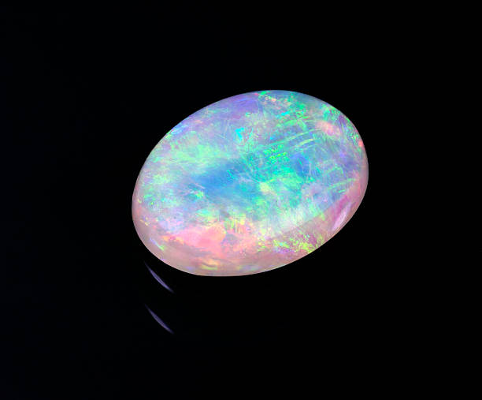
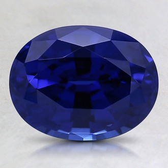
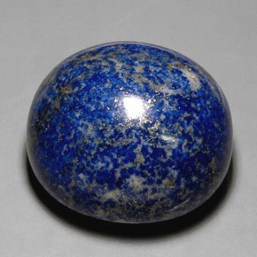

Magic Eye For Stones
Opal
 "Belive it or not the opal was Queen Victoria's favorite gemstone. Most opals represent a calm Sense and in some cases can either bring good or bad luck dpending on certain circumstances. In nature you may sometimes find opal overtaking peices of petrified wood. And while most opals you see like on the internet it not really rare to see others that are either mostly red, green or white all around." Retrived from https://e-opals.com/opal-facts on February 6th
{kind=link}
Sapphire
 "Sapphires are one the most popular gemtstones known to human society. If you where to ask anyone to name five gemstones, nine times out of ten sphhire is going to be one of them. Now spphires are not one of the rarest gemstones, however, they are yet very valuable. When you think of sapphires, you probably think of a rich blue color, but sapphires actually come in almost every color of the rainbow. Much like pink and even orange." Retrived from https://www.brilliantearth.com/news/15-amazing-facts-about-sapphires-the-september-birthstone/ February 6th
{kind=link}
Lapis
 "Lapis is a beautiful gemstone that most represents the feeling of sadness. Mostly becuase of it's darker blue coloring. Lapis, as many people belive, are stones said to help "awaken your inner self". As an interesting fact, lapises are known to have a high static charge. So when you come into contact with one, watch out. (The sock is not that bad). Typically when finding lapis you tend to also find traces of pyrite and calcite." Retrived from https://mcfarlanefinejewellery.com/blogs/the-lovelist/facts-about-lapis-lazuli February 6th
{kind=link}